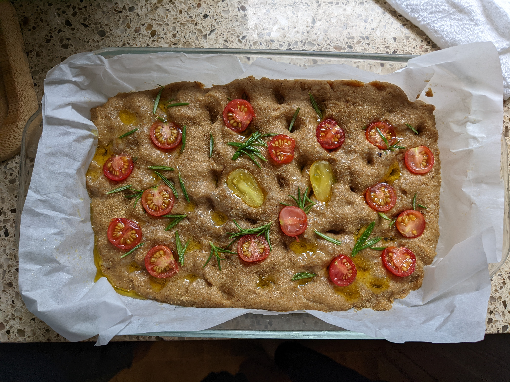

Paleo Focaccia

Description
Focaccia is a leavened Italian flatbread containing high
oil content and an assortment of toppings. For this particular
recipe, I will be using tomatoes and rosemary as my toppings
of choice. However, most pizza or flatbread toppings work
just as well.
For more information about focaccia and the Roman history behind
it, check out its Wikipedia page here.
Ingredients
Serves 6
- 4 t active dry yeast
- 4 t sugar, inulin, honey, maple syrup, etc. to feed the yeast.
- 160 ml water (lukewarm
- 288g blanched almond flour
- 56g psyllium husk
- 2 T flax seed meal
- 3 t non-aluminum baking powder*
- 1 t kosher salt
- 2 eggs at room temperature
- 4 egg whites at room temperature
- 26g extra-virgin olive oil
- 4 t apple cider vinegar
- rosemary sprigs (optional)
- about 230g fresh bite-size tomatoes (optional)
- additonal extra-virgin olive oil for topping
- sea salt for topping
*Use aluminum-free baking powder to avoid breading turning
an unpleasant blue color from reaction with the vinegar.
Directions
- Activate the yeast by adding it to the water and sugar.
Cover it and let rest for at least 7 minutes or until it
bubbles. Make sure the water is not too warm nor too cold as
the yeast will not rise. The water should be just warm to the touch.
- As the yeast activates, mix the almond flour, psyllium husk,
flax seed, baking powder, and salt in a separate bowl. Whisk
until well mixed.
- When the yeast is active, use a hand- or stand-mixer to
whisk in the eggs, egg whites, olive oil, and vinegar until
the mixture is just frothing.
- Mix in the flour mixture in two batches, ensuring it is well-mixed
but not over mixing. There should be no pockets of flour remaining.
- Transfer dough to a prepared 10-in round pan, or any other pan that has an
area of about 75 square-inches. Wet hands or a silicon spatula
and spread the dough until it is flat.
- Wet fingers or spatula handle and make regular pock-marks across the dough.
This prevents the dough from rising too much but removing some air, but
also provides a convenient space for toppings.
- Sprinkle generously with additional olive oil, a nice finishing salt
(like sea salt), and any non-acidic toppings.
Let prove for one hour, making sure the oven is preheated to 350F/175C.
- Add remaining toppings after proving, making sure to push them in so they do
not fall out.
- Put bread in the oven for 25 minutes, covering with foil
after 10 to prevent burning. Check doneness by looking for a
golden-brown top and bottom.
- Let cool completely before eating.